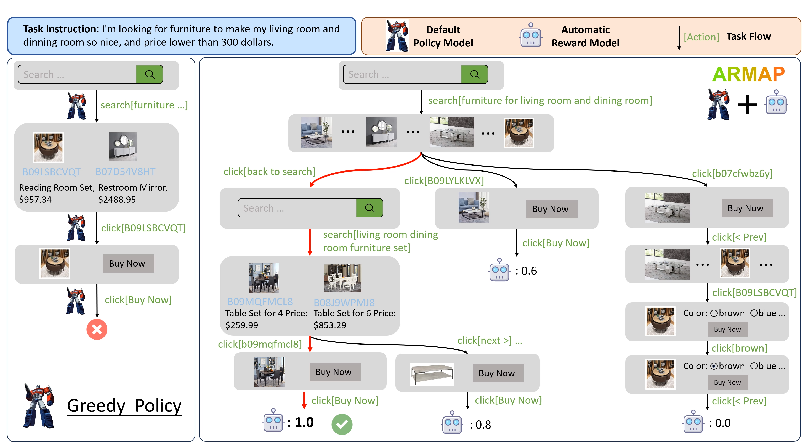

|
Wenjun Liu I am currently a first-year MS student in Computer Science at the University of Massachusetts Amherst. I received my bachelor's degree from Tsinghua University. My research interests are LLM Reasoning and Planning, Multimodal Foundation Model, and Computer Vision. Email / Scholar / LinkedIn / Github I am actively looking for a self-funded summer internship in LLM Reasoning related research. Feel free to contact me if you are interested! |
{kind=link}
Research( * denotes equal contribution) |
|

|
ARMAP: Scaling Autonomous Agents via Automatic Reward Modeling And Planning
Zhenfang Chen*, Delin Chen*, Rui Sun*, Wenjun Liu*, Chuang Gan ICLR, 2025 project page / arXiv An automated framework to learn reward models from environmental interactions without human annotations, significantly improving large language model agents' performance in complex, multi-step decision-making tasks. |

|
GENOME: Generative Neuro-Symbolic Visual Reasoning by Growing and Reusing Modules
Zhenfang Chen*, Rui Sun*, Wenjun Liu*, Chuang Gan ICLR, 2024 project page / arXiv A generative neuro-symbolic visual reasoning model that leverages LLMs to iteratively build, reuse, and refine modular code components, enabling efficient transferability, transparency, and strong performance on visual reasoning tasks. |
Educations |
-
University of Massachusetts Amherst
MS, Computer Science, 2024.09 - (now),
-
Tsinghua University
Undergraduate, Information and Computing Science, 2020.09 - 2024.06
|
Website adapated from Jon Barron. |